Reviews
Honest, detailed reviews from my travels and closer to home.
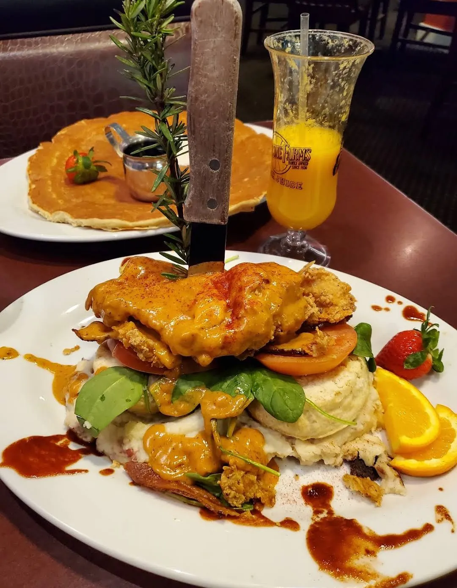
Hash House A Go Go (Plaza)
Great food and great service: the Fried chicken egg Benedict and a pancake to share.
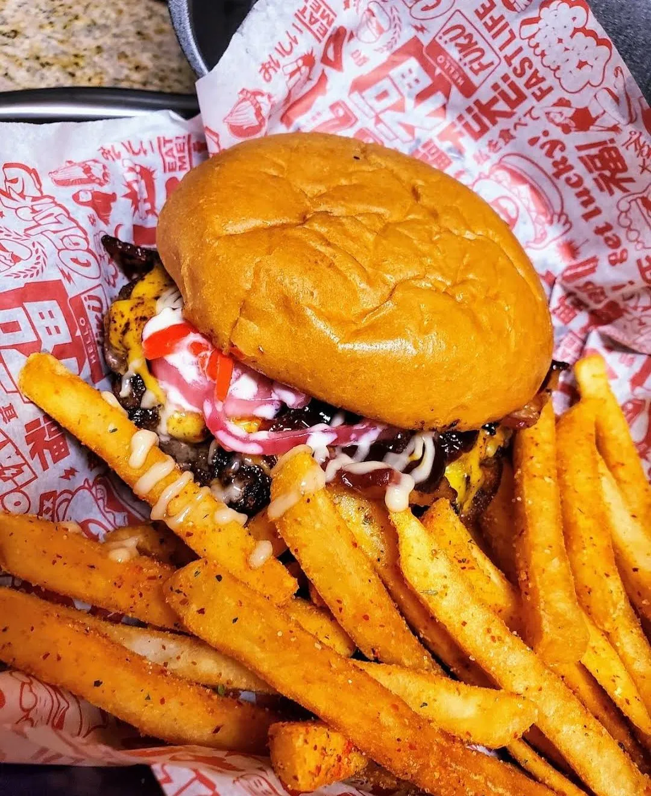
Fuku Burger Chinatown
Great burgers and fries: the bacon-loaded BUTA and the TAMAGO with a runny egg.
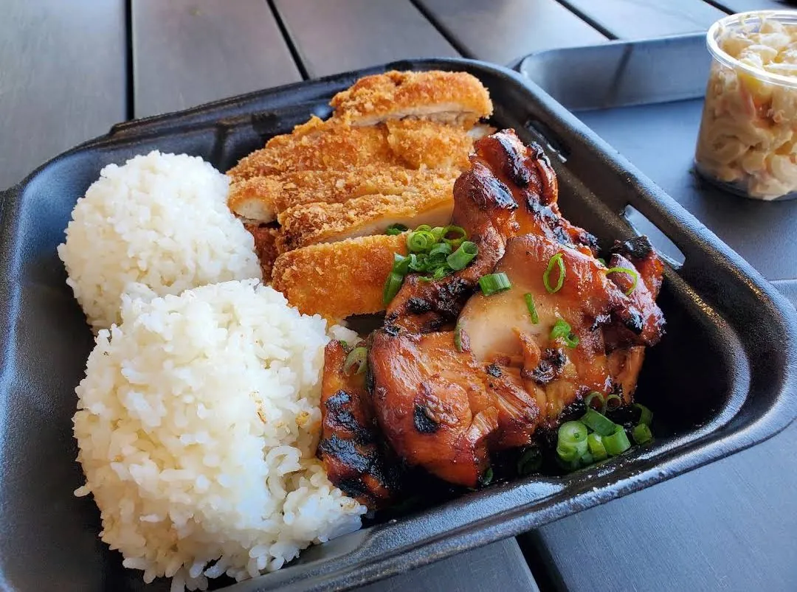
9th Island Grill
A Hawaiian mixed plate with BBQ chicken and chicken katsu, a tasty pulled pork sandwich, and sauces on the side.
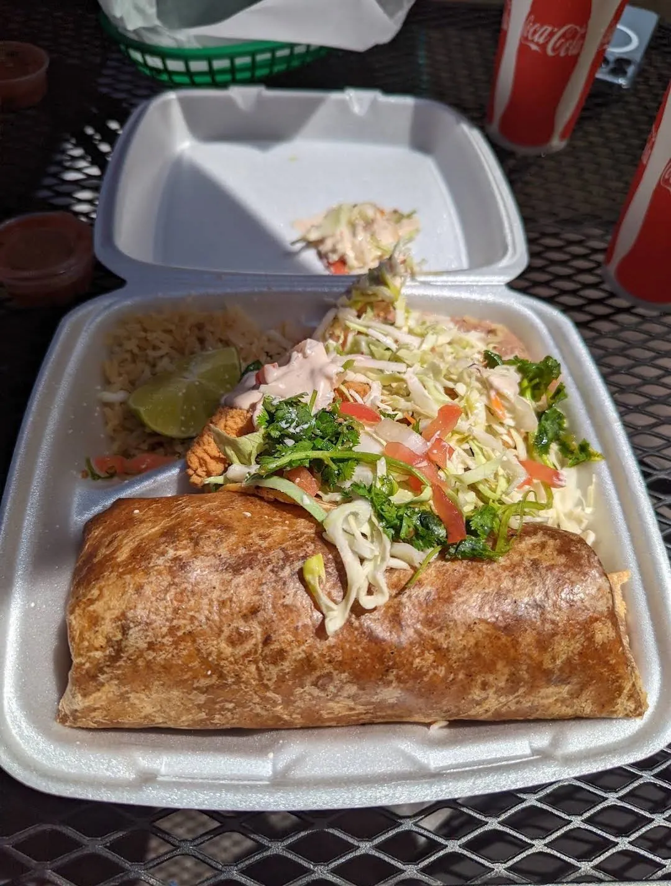
Mi Ranchito Mexican Restaurant
My favorite meal in all of California: fresh lobster and seafood burritos and a super friendly chef-owner.
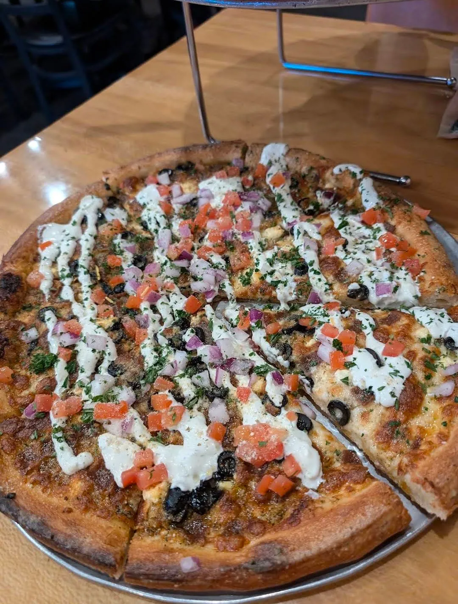
Uncle Joe's Pizzeria
Phenomenal stone-baked pizza, amazing service and a warm, welcoming atmosphere.
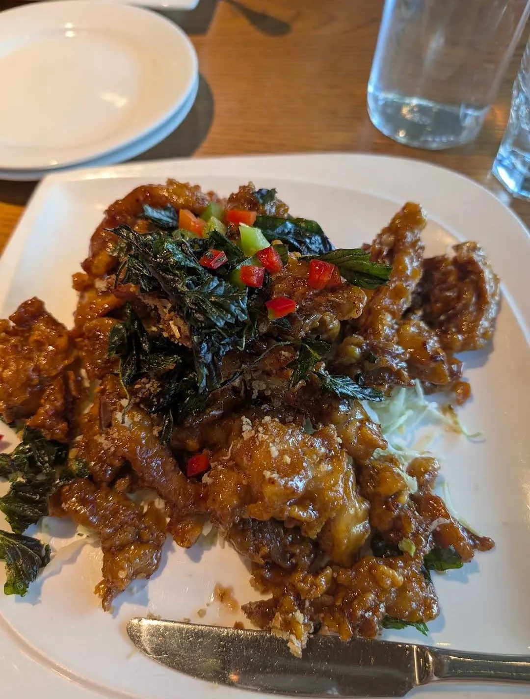
Bai Tong Thai Street Cafe
Fantastic Thai food and excellent service: crispy garlic chicken, pad thai and panang curry.
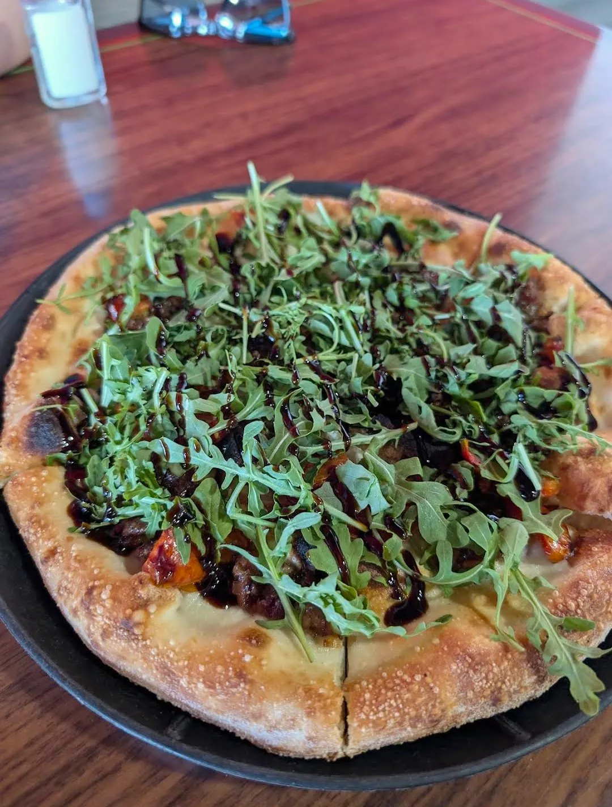
PZA Pizzeria
Fresh wood-fired, build-your-own pizza, and a cheese-free BLT with bacon jam that became my favorite.
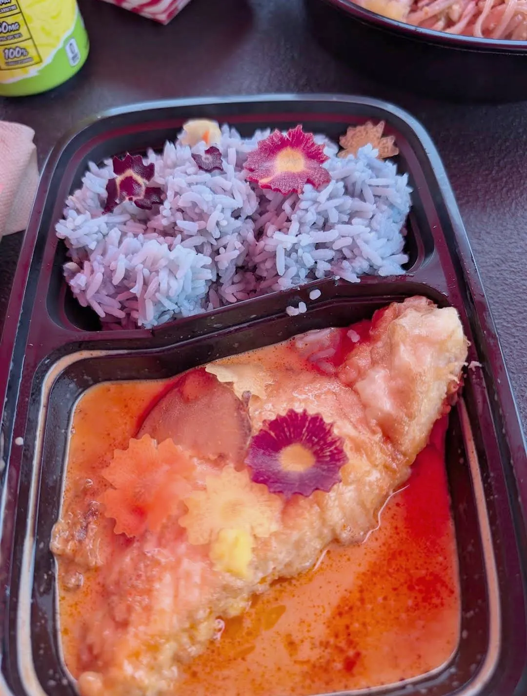
Thai Alaska Kitchen
Some of the best Thai food in Alaska: rich panaang curry with beautiful butterfly pea flower rice.
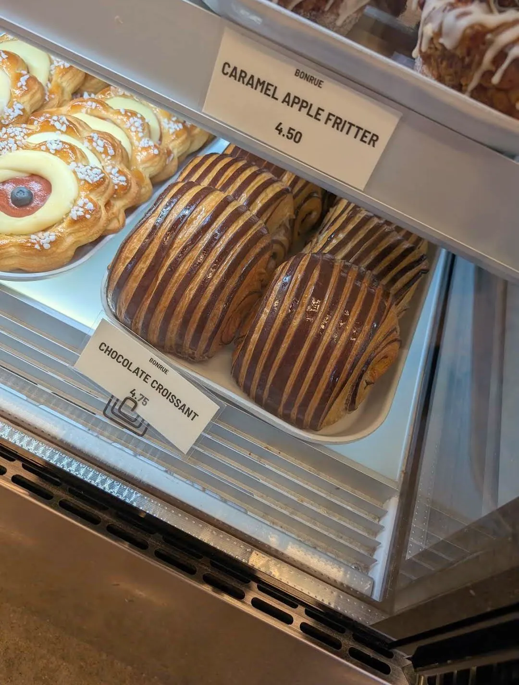
Bonrue Bakery
A must-stop on the way to Zion: a gorgeous pastry case, a striped chocolate croissant and coffee.
Oscar's Cafe
The Murder Burger, a half-pound garlic burger, and fantastic pork enchiladas just 5 minutes from Zion.
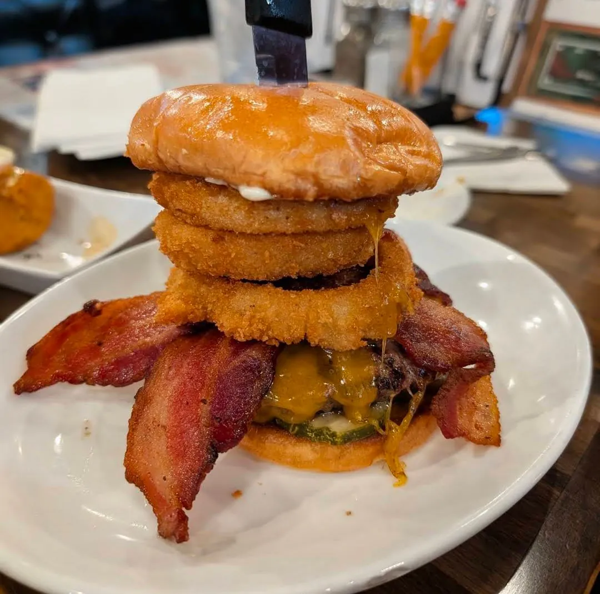
Slater's 50/50
Excellent burgers, killer bacon, crispy mac and cheese balls and a $28 all-you-can-eat deal off the Strip.
The Carriage House Buffet & Catering
A fresh, hot Southern breakfast buffet and honestly my favorite pancakes ever.
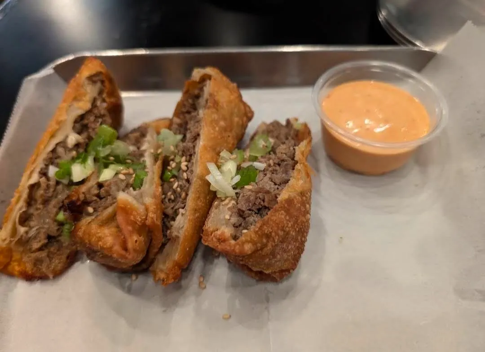
Seoul Casa
Korean Mexican fusion done right: crispy bulgogi egg rolls, kalbi beef enchiladas and a quesadilla with mac salad.
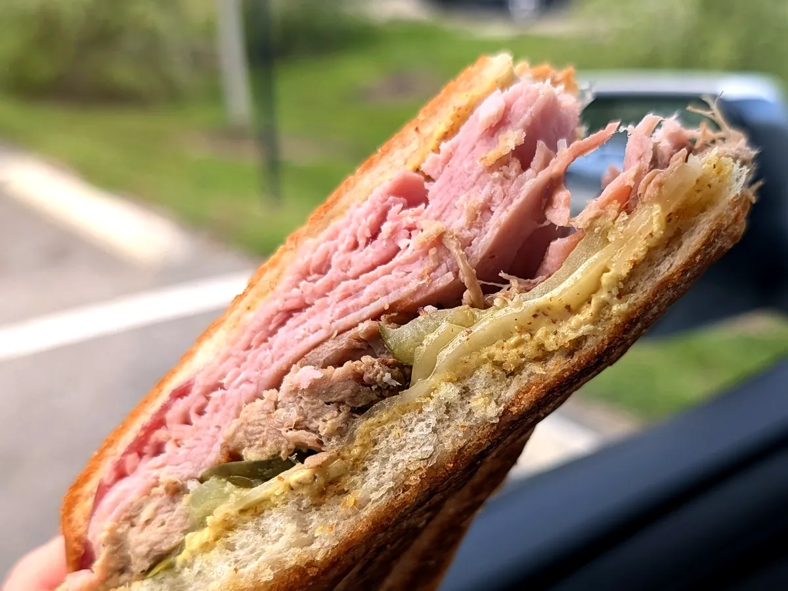
La Segunda Bakery and Cafe
Cuban bread done right since 1915, and a dessert case that makes you renegotiate your order.
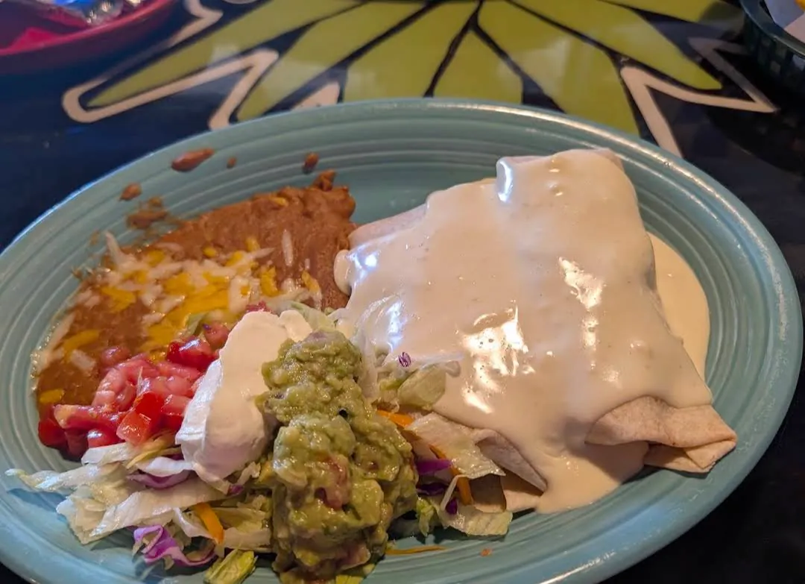
El Mezcal | Mexican Restaurant
Chipotle shrimp, soft shrimp chimichangas with cheese sauce, and great service on a quiet Sunday.